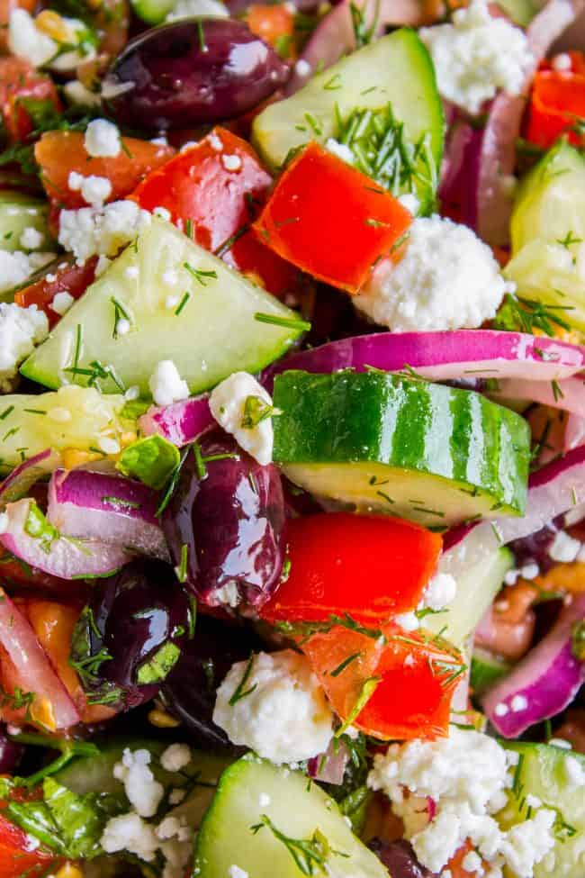

Feta Pasta Salad

Sharp, Tangy, Delicious
A medley of cold pasta, vegetables, and seasonings to compliment the sharp bite of feta cheese
Ingredients
- 2 cucumbers cut into half circles
- 1 medium onion, diced
- 1 medium sliced onion, or equivalent sliced cherry tomatoes
- 1 cup chopped bell pepper
- 6-10 oz authentic feta cheese
- 8-12 oz pasta, such as fusilli, cooked and cooled
- Bottle of italian dressing of choice (regular, not creamy version)
Steps
- Add vegatables, pasta, cheese, and salad dressing to large bowl
- Mix until combined. May be served or chilled in refrigerator before serving